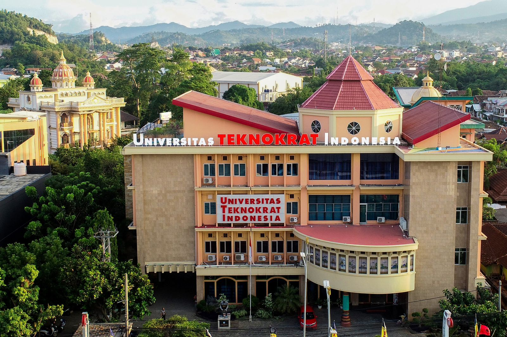
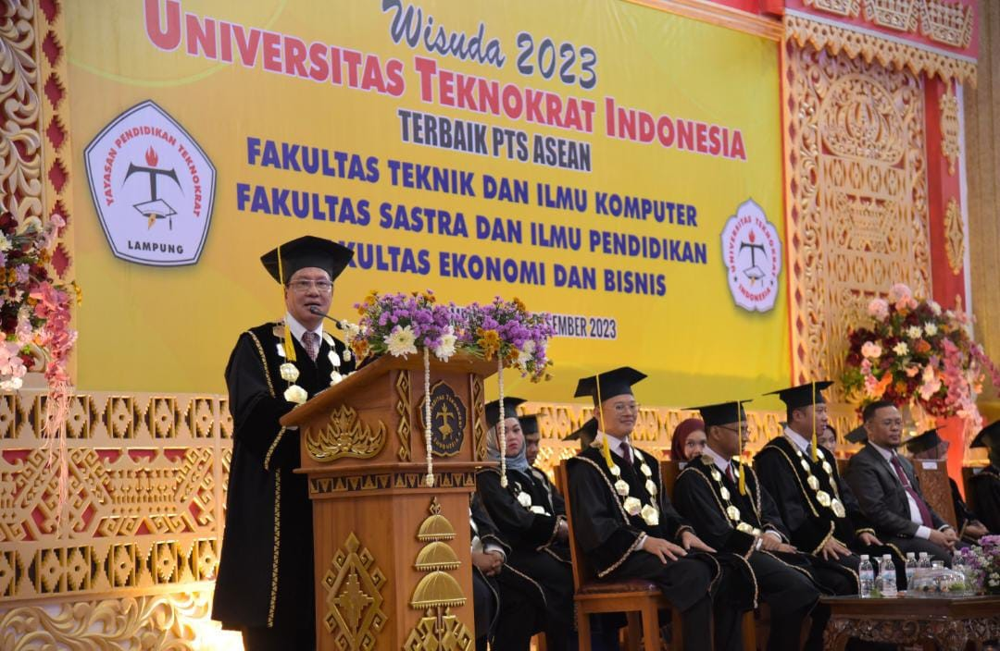

| New flash |
|  |  |
 |
| Universitas Teknokrat Indonesia Genjot Inovasi Masuk Klaster Terutama Kemdikbutristek | Mahasiswa Univrsitas Teknokrat indonesia lolos Kampus Mengajar 7,Siap Kontribusi | Universitas Teknokrat Indonesia Cetak Lulus Bertaraf Internasional |